Connor E Milton
Fasion Design Student, RMIT Melbourne


Through my creative practice I hope to contribute to the queer community by exploring the queer experience and letting that inform my design work. I try to design for diverse queer bodies and investigate the relationship between queer expression and dress, using fashion as a tool to explore and understand personal expression for myself that hopefully translates to others. With this at the forefront of my mind when designing and making I also consider sustainability in fabric choices and potential garment production; as well as striving for custom and customisable garment design to ensure quality and evoke connection between garment and wearer. As my skills develop through study I hope to be able to produce my work to its fullest potential and bring to fruition the concepts I conceive.
anoid
a.noid
no ID
paranoid
android
The name anoid came from these words after a conversation with a friend about a somewhat identity crisis or maybe ‘rebrand’. After a year of performing in drag I came to the realisation that I identify as non-binary and I didn’t need to have a separate gender expression to express myself. I could just present more feminine everyday because that is who I am. I had two separate identities Connor and my drag persona Ketrina. After I decided to stop drag I wanted to, as trivial as this sounds, change my instagram handle as it felt strange having it under my drag persona that doesn’t exist anymore. So I was talking with my friend and I thought of no id mostly as a joke and the only thing close to it was noid.5 which I thought was funny and reminded me of the radiohead song paranoid android. I guess the weird sort of disjointed handle of ‘ano.id.5’ symbolised my feeling at the time and it stuck.